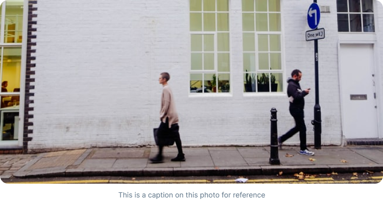

Attending a trade show can be a very effective method of promoting your company and its products. And one of the most effective ways to optimize your trade show display and increase traffic to your booth is through the use of banner stands.
Last month, my wife, Anne Doe, took me to Las Vegas because she had to go for a business convention. Needless to say, she writes for an guide to casinos and I hate gambling. But then, she likes it and this supports us too, so I went along without any hassle. At first I was depressed, but then as I asked around and looked around, I ended up having more fun in Las Vegas than I would have thought. And no. I did not enter a single casino while I was there.
One of the greatest things about Las Vegas, Reno and Atlantic City (but especially Las Vegas) is the number of shows that are available. You can get to watch top class comedians like Jay Leno, Jerry Seinfeld, Ray Romano, Tim Allen and even the likes of Bill Cosby and Chris Rock. If you are into music you can watch female singers like Celine Dion, Mariah Carey, Britney Spears, Christina Aguilera and Beyonc?, male performers like Phil Collins, Eric Clapton, Snoopy Dog and bands like Oasis and Bon Jovi. I could go on and on but the list is endless. If you are into magic you can watch magicians like David Copperfield do their thing meters from you. Whatever you like, you can find it here from Western music to oldies to Jazz, Rock, Heavy Mettle to Trance. All you have to do is look at the itenary offered during your visit.
Chinese to Japanese to Korean to Jewish and even Vegetarian and proper
meat eating establishments await your every delight in Vegas. Do not
opt for the cheap and oily fried dishes served for free while you
play. Stop a while and take in the delightful scenery and smells of
East Asian or European dishes. What is wondrous is that you get to see
man’s ability to mix. A real melting pot if I may say so myself.
But is that all what casino cities like Las Vegas are about? Do you have to remain in the city to really and truly enjoy your stay? No.
Hoover Dam and the Grand Canyon: Book yourself a seat on any of the
many sightseeing tours available and go and watch the architectural
marvel that is Hoover Dam built over the Grand canyon which is also a
grand sight to see by itself. Black Canyon is another must see as is
Lake Mead which is so beautiful just because it is a body of water all
surrounded by desert-like nature. Colorado River:
While looking at the Dam and Canyon is from above, to see the true beauty of the river, you have to go down. The Colorado river is excellent for river-rafting and water sports, but you do not have to take part if it is not your thing. Instead just sit back and enjoy another of nature’s marvels.
Who can not resist going to one of the old towns like those in the Western gun slinging movies? Your destination needs to be Old Nevada. There you can delight in an old western town right in the middle of Red Rock Canyon. They host western shootouts too so come prepared, partner! I could go on and on about other attractions like the theme park in Circus Circus, the Gilcrease Nature Sanctuary, the Henderson Bird Viewing Preserve and Mt. Charleston but I think you get the picture. In Las Vegas and hate gambling? Do not despair. Just go out and have some clean un-gambling fun.
Many people would say that it is absolute madness to keep on doing the same thing, time after time, expecting to get a different result or for something different to happen.
Daniel hosts in Yogyakarta to earn extra moneyWho can not resist going to one of the old towns like those in the Western gun slinging movies? Your destination needs to be Old Nevada. There you can delight in an old western town right in the middle of Red Rock Canyon. They host western shootouts too so come prepared, partner! I could go on and on about other attractions like the theme park in Circus Circus, the Gilcrease Nature Sanctuary, the Henderson Bird Viewing Preserve and Mt. Charleston but I think you get the picture. In Las Vegas and hate gambling? Do not despair. Just go out and have some clean un-gambling fun./p>